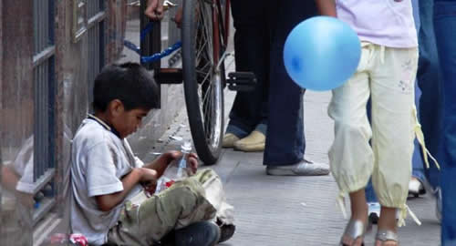

Real Chubut - Agencia de Noticias


Preocupante: crece la pobreza y un 33,8% de los niños se alimenta en comedores

La pobreza alcanza al 48,1% de los niños en Argentina. De ese valor se desprenden varios indicadores que marcan la carencia que están viviendo los menores en nuestro país. En el caso de la alimentación, mientras un 17,6% tiene déficit en sus comidas, un 8,5% pasó hambre durante 2017,según el último informe de Barómetro de Deuda Social de la Infancia de la UCA que además indica que aumenta de manera constante la asistencia a comedores infantiles.
Las cifras, que son de finales del año pasado, podrían acrecentarse en un contexto como el actual con devaluación, inflación, shock tarifario y caída del salario real. El último índice de pobreza del INDEC marcó 25,7% en el segundo semestre del año pasado y se espera que regrese al 29% a fin de año, según estimaciones de la UCA . En el caso de la niñez el número es mayor porque se trata de una medición multidimensional, no solo en base al precio de la canasta básica.
El trabajo del barómetro, realizado en base a encuestas a más de 5.700 personas de conglomerados de 80.000 habitantes, analiza inequidades asociadas a cada dimensión de los derechos del niño, por eso se relevaron datos sobre alimentación, salud, hábitat, subsistencia, crianza y socialización, información, educación y trabajo infantil.
Alimentación, hábitat y salud, que son los pilares por los que se debe analizar la pobreza fueron los indicadores que arrojaron números más preocupantes. La investigación se viene desarrollando desde 2010 anualmente. En esta última edición se realizó un ajuste metodológico sobre la muestra ya que tomaron datos del último censo, antes trabajaban con el de 2001. Si bien en las series (2010 - 2017) se respetó la anterior metodología, se hizo un nuevo apartado solo para 2017 en donde hay una foto más certera de la realidad.
"El dato de 2017 es mucho más representativo de la estructura actual Argentina", explica Ianina Tuñón, Investigadora Responsable del Barómetro en una rueda de prensa de la que participó ámbito.com. Además advierte que estos datos muestran "una estructura social más empobrecida que se nota en todos los indicadores".
• Pobreza y alimentación
La medición arroja que en 2017 hubo un 48,1% de niños, niñas y adolescentes pobres y en el interior de ese grupo se estima a un 10,2% en situación de indigencia. En cuanto a la distribución geográfica, en el Conurbano Bonaerense mostró el mayor índice ya que la pobreza alcanza al 54,2% de los niños.
Ligado a este fenómeno se observa un déficit alimentario de 17,6% (chicos que no comieron correctamente) y 8,5% en su nivel más grave, es decir hambre. Además se detectó que de ese universo de niños un 33,8% asiste a comedores escolares, siendo nuevamente el GBA el espacio con mayor cobertura alimentaria directa con 37,7%.
Según la investigadora de la UCA, hay cada vez más asistencia a los comedores. Si bien desde el 2010 al 2016 esta participación se mantuvo en un rango del 25%, en el último año creció más de cuatro puntos porcentuales y se fue a 32,7%. "No está siendo suficiente la AUH y la asistencia directa ya que este indicador no ha dejado de subir desde 2014", completa Tunón.
La especialista adelanta la publicación de otro trabajo en donde estudios cualitativos en villas marcan "que la mayor parte de los hogares comen exclusivamente de la comida que van a retirar de los comedores comunitarios de los barrios". "En estos hogares se bajó el consumo en cantidad y calidad, por eso los niños redujeron la cantidad de comidas que hacen al día", grafica.
Según los datos del último año el 9,2% de los chicos en Argentina pasó hambre. Una Tendencia que se encamina a aumentar en los próximos meses, según adelantan otros especialistas.
• Hábitat y salud
El informe destaca que el 51,3% de la infancia y adolescencia reside en espacios barriales nocivos en términos de la contaminación ambiental. Otros números que preocupan son que la precariedad en la construcción de la vivienda afectó en 2017 a casi el 25% de la infancia, la situación de hacinamiento al 22,5%, y las carencias en el espacio del saneamiento al 46,2%.
La problemática del saneamiento está fuertemente localizada en el GBA donde afecta al 63,7%. Sobre este punto Tuñon remarca que desde 2010 a la fecha hubo mejoras: en esa época afectaba al 47,2% a nivel nacional y el año pasado se ubicó en 41,3%. Sin embargo, recalca que habrá que estar atentos a cómo evoluciona este indicador pues la nueva política oficial de reducir más el déficit fiscal podría afectar a las obras.
En otro orden, el 52,7% de la infancia en la Argentina tiene como única opción para la atención de su salud el servicio público. Esta dependencia alcanza al 80,9% de los chicos en el estrato más bajo. "Esto nos hace preguntar cuales son los desafíos del Estado para garantizar la atención de niños y adolescentes", lanzó.
• Otras variables
El 67% de los chicos escolarizados en la educación primaria y secundaria asiste a escuelas de gestión pública. En cuanto a las carencias se detectó que el 48,9% de los chicos en la escuela primaria carecen de ofertas en el espacio de las nuevas tecnologías y un estudiante de escuela estatal tiene 3,5 veces menos chances de acceder a esta oferta que pares en escuelas de gestión privada.
Esta variable se puede asociar también con el derecho a la información. Si bien hay acceso a Internet en todas las franjas sociales, la conectividad en el hogar es sensiblemente menor entre los más pobres que dependen de conexiones móviles en su mayoría por tarjetas prepagas. También se detectó deficiencia en los saberes tecnológicos.
"La escuela no está acompañando, se está corriendo y cada vez enseña menos computación", se lamenta Tuñón y recuerda que desde 2010 cuando se entregaron las netbook no hubo más actualización de programas y de aparatos. "Observamos un estancamiento y un posición regresiva que va a llevar a que crezca más la desigualdad social", cierra.
Durante la presentación estuvieron presentes cuatro de los 68 candidatos a Defensores del Niño de Nación, un cargo que debe bregar por los derechos del niño y que está vacante desde hace 12 años. El Congreso comenzó el año pasado el proceso de selección pero quedó frenado con el recambio legislativo. En la charla María Susana Ciruzzi, Marisa Graham, Juan Facundo Hernández y Nora Pulido compartieron su preocupación por los resultados del informe y explicaron que el rol que buscan ocupar podría tal vez ayudar a mejorar esos indicadores.
En una evaluación final Tuñón sostuvo que desde 2010 a la fecha hubo algunas mejorías. "Casi todos los aspectos están mejor, pero los niveles de déficit son tan altos e inaceptables que es complicado pensar que estamos mucho mejor", sentenció.
Fuente: Ambito